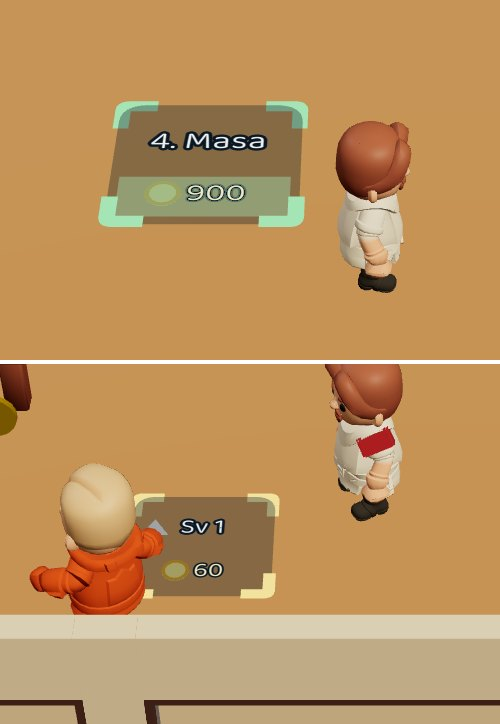
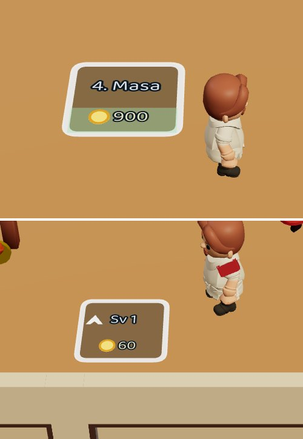
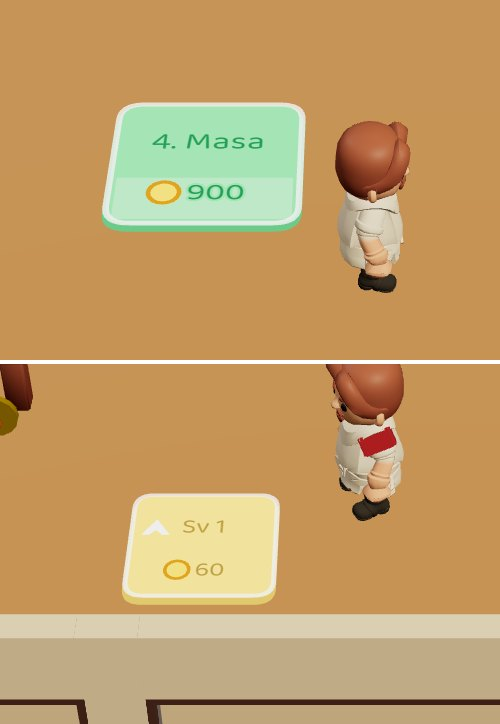
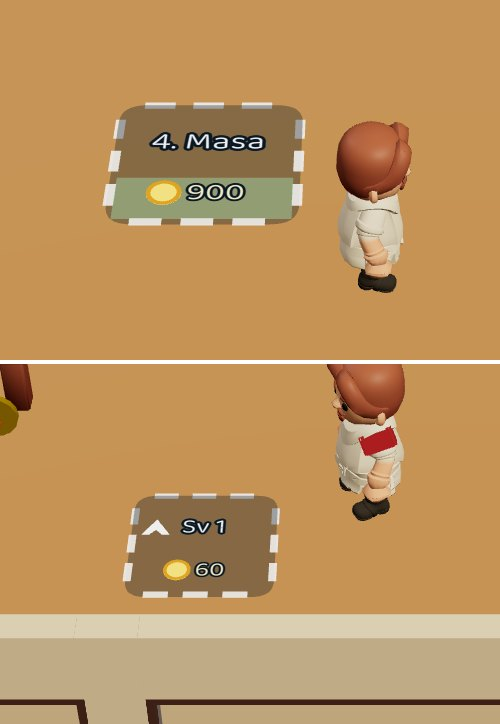
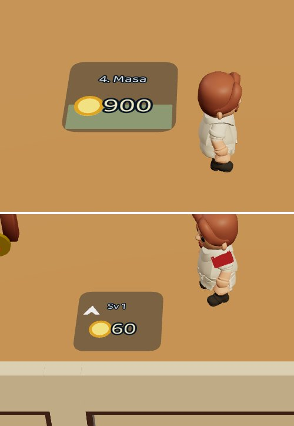
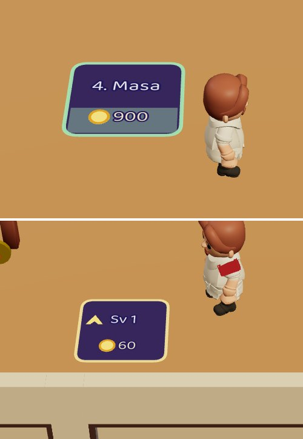
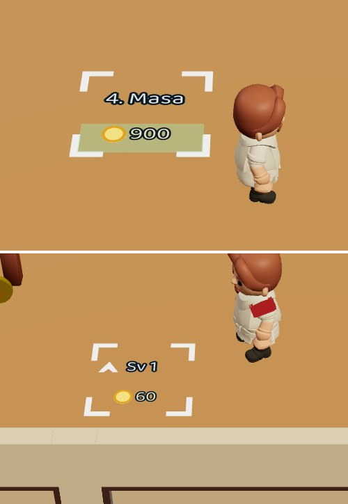
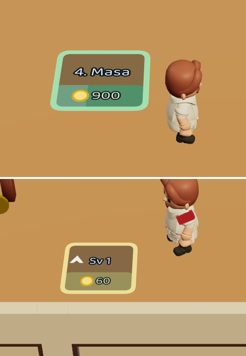
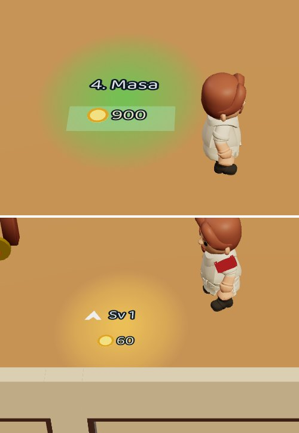

Hepsi oyunun kendisinden, aynı anda ve aynı kadrajda çekildi. Her kartta üstte satın alma pad'i ("4. Masa", üçte biri dolu), altta masa yükseltme noktası ("Sv 1", yukarı oklu) var. İkisi aynı biçimi paylaşıyor; yeşil = yeni şey aç, sarı = yükselt.
Değişmeyen: kutunun boyu ve yeri (oyuncunun basınca dolduğu alan ile çizilen kutu aynı kalır), yerde düz durması (havada kart yok).
Beğenmediklerini ele, kalanları sohbette yaz. Parçalar birleşebilir (ör. "F'nin moru + H'nin şeridi").
Not: bugünkü hâlde (A) para pulu soluk görünüyor; bu bir çizim hatası, hangisini seçersen seç düzelecek.








